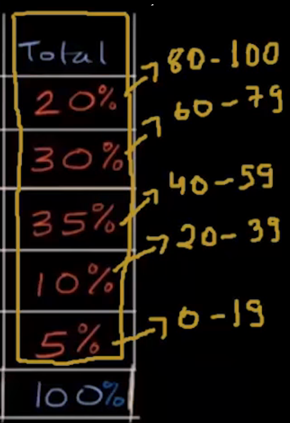
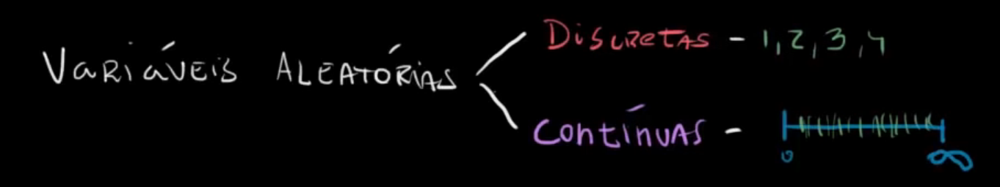

voltar
Teorica de ME
Probablidades - Teoremas e Axiomas
Teoremas de probablidades
Considera A e B acontecimentos de um universo Ω
Seja Ω o universo de resultados associados a uma experiência aleatória.
Sejam A e B dois acontecimentos (A⊂Ω e B⊂Ω).
Teoremas:
P(Aˉ)=1−P(A)
P(Aˉ)=1−P(A)⇔P(Aˉ)+P(A)=1
P(∅)=0
P(A)≤1
P(A∪B)=P(A)+P(B)−P(A∩B)
$P(A \cap \bar B) + P(A \cap B) = P(A) $
Ficando assim com os Axiomas principais:
Axioma 1:
P(A)≥0,∀A∈
Probablidade do acontecimento impossível
Teorema:
P(∅)=0
P(Ω)=1
Probablidade do acontecimento complementar
Seja A um acontecimento de um universo de resultados Ω
P(Aˉ)=1−P(A)
Distrubuição marginal e distribuição condicional

Perguntas a fazer nesta tabela:
Qual é a percentagem de acertos e os tempos que ficaram a estudar?
 é a distribuição marginal. Marginal, sendo as probablidades laterais.
As probablidades condicionais são aquelas que tem condições, por exemplo os valores que estao no meio da tabela.
Varíaveis aleatórias: discretas e contínuas

Discretas: sao contaveis.
Continuas: infinitas.